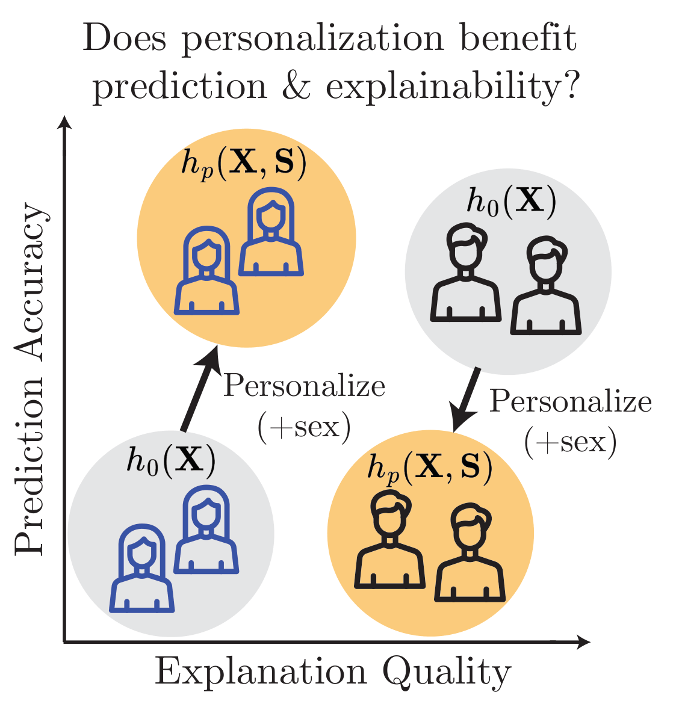
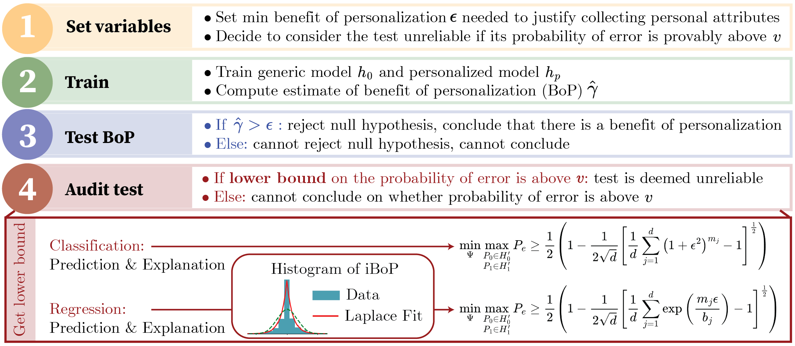
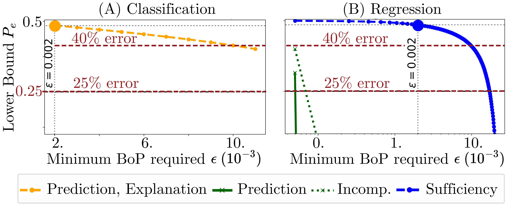

In high-stakes domains like healthcare, users often expect that sharing personal information with machine learning systems will yield tangible benefits, such as more accurate diagnoses and clearer explanations of contributing factors. However, the validity of this assumption remains largely unexplored. We propose a unified framework to quantify how personalizing a model influences both prediction and explanation. We show that its impacts on prediction and explanation can diverge: a model may become more or less explainable even when prediction is unchanged. For practical settings, we study a standard hypothesis test for detecting personalization effects on demographic groups. We derive a finite-sample lower bound on its probability of error as a function of group sizes, number of personal attributes, and desired benefit from personalization. This provides actionable insights, such as which dataset characteristics are necessary to test an effect, or the maximum effect that can be tested given a dataset. We apply our framework to real-world tabular datasets using feature-attribution methods, uncovering scenarios where effects are fundamentally untestable due to the dataset statistics. Our results highlight the need for joint evaluation of prediction and explanation in personalized models and the importance of designing models and datasets with sufficient information for such evaluation.
Prediction and explanation can diverge
We formally prove that a personalized model can match a generic model in prediction accuracy yet offer better or worse explanations. Focusing only on predictive performance can overlook interpretability gains—or mask harms to explainability—for some demographic groups.
Testability depends on the learning task
In classification, the lower bound on hypothesis test error is identical for prediction and explanation—either both are testable, or neither is. In regression the bounds differ, so one may be reliably testable while the other is not.
High empirical gains can be misleading
A large observed benefit of personalization does not guarantee a statistically valid conclusion. In our experiments, the largest apparent gain (sufficiency in regression, $\hat{\gamma} = 0.19$) was fundamentally untestable, while a far smaller prediction gain ($\hat{\gamma} = 0.002$) was statistically reliable.
Personalization is hard to evaluate in healthcare
Across real-world healthcare datasets (MIMIC-III, UCI Heart Dataset), many hypothesis tests are statistically infeasible due to limited group sizes and multiple personal attributes—highlighting a fundamental limitation of personalized medicine.
This paper provides the first formal analysis showing that personalization's effect on prediction does not determine its effect on explainability, highlighting the need to evaluate both. A common intuition in machine learning is that if personalization improves prediction, it should also improve the quality of explanations derived from the model. Despite its prevalence, this presumed connection between predictive performance and explanation quality has not been formally analyzed in the context of personalization.
We consider a generic model $h_0 : \mathcal{X} \to \mathcal{Y}$ and a personalized model $h_p : \mathcal{X} \times \mathcal{S} \to \mathcal{Y}$, and measure the Group Benefit of Personalization $\GBoP(h_0, h_p, s) = C(h_0, s) - C(h_p, s)$ for each group $s \in \mathcal{S}$, where a positive value indicates the personalized model performs better. We write $\gamma_P$ and $\gamma_X$ for the worst-case group benefit over prediction and explanation, respectively.

No Prediction Benefit Does Not Imply No Explainability Benefit
The following theorem shows that a personalized model may match a generic model in accuracy, yet offer better explanation. Focusing only on prediction can overlook significant interpretability gains.
Theorem 4.1
There exists a data distribution $P_{\mathbf{X}, \mathbf{S}, \mathbf{Y}}$ such that the Bayes optimal classifiers $h_0$ and $h_p$ satisfy $\gamma_P(h_0, h_p) = 0$ (with $\gamma_P$ measured by 0-1 loss) and $\gamma_X(h_0, h_p) > 0$ (with $\gamma_X$ measured by sufficiency and incomprehensiveness).
Example 4.1
Consider a loan approval model using credit score, income, and debt-to-income ratio. Adding a personal feature—"pre-approved by another bank"—that is strongly correlated with existing features may leave predictions unchanged. However, an explainer might now assign most importance to this new feature because it provides a clearer justification. Thus $\GBoP_P = 0$ but $\GBoP_X > 0$ for each group.
No Prediction Harm Does Not Imply No Explainability Harm
A personalized model may match a generic model in accuracy yet offer worse explanations. Focusing only on predictive performance can obscure significant harms to explainability.
Theorem 4.2
There exists a data distribution $P_{\mathbf{X}, \mathbf{S}, \mathbf{Y}}$ such that the Bayes optimal classifiers $h_0$ and $h_p$ satisfy $\gamma_P = 0$ (with $\gamma_P$ measured by 0-1 loss) and $\gamma_X < 0$ (with $\gamma_X$ measured by incomprehensiveness).
Example 4.2
Consider a pneumonia detection model whose chest X-ray findings alone perfectly predict outcomes. Adding white blood cell count leaves accuracy unchanged, but the personalized model now splits importance between X-ray findings and white blood cell count. The explanation is worse—it is less clear which feature drives the decision—even though the X-ray alone was already perfectly predictive.
Personalization Can Affect Groups Differently
Even when no group's prediction changes, personalization may improve explainability for some groups while simultaneously degrading it for others.
Theorem 4.3
There exists a data distribution $P_{\mathbf{X}, \mathbf{S}, \mathbf{Y}}$ such that the Bayes optimal classifiers $h_0$ and $h_p$ satisfy $\GBoP_{P}(h_0, h_p, s) = 0$ (measured by 0-1 loss) for all groups $s$, but some groups have $\GBoP_{X}(h_0, h_p, s) > 0$ while others have $\GBoP_{X}(h_0, h_p, s) < 0$ (measured by sufficiency and incomprehensiveness).
No Explainability Benefit Can Imply No Prediction Benefit (Additive Setting)
We now ask the converse: can a lack of explainability benefit imply no predictive benefit? We show this is true for a simple additive model, as long as both sufficiency and incomprehensiveness show no benefit.
Theorem 4.4
Assume $h_0$ and $h_p$ are Bayes optimal regressors and $P_{\mathbf{X}, \mathbf{S}, \mathbf{Y}}$ follows an additive model: $$\mathbf{Y} = \alpha_1 \mathbf{X}_1 + \cdots + \alpha_t \mathbf{X}_t + \alpha_{t+1} \mathbf{S}_1 + \cdots + \alpha_{t+k} \mathbf{S}_k + \epsilon,$$ where $\mathbf{X}_1, \ldots, \mathbf{X}_t$ and $\mathbf{S}_1, \ldots, \mathbf{S}_k$ are independent and $\epsilon$ is independent noise. If for $s \in \mathcal{S}$: $$\GBoP_{\text{suff}}(h_0, h_p, s) = \GBoP_{\text{incomp}}(h_0, h_p, s) = 0,$$ then $\GBoP_P(h_0, h_p, s) = 0$. Consequently, if this holds for all groups $s$, then $\gamma_P = 0$.
Corollary 4.5
Under the assumptions of Theorem 4.4, if for some $s \in \mathcal{S}$ we have $\GBoP_P(h_0, h_p, s) \neq 0$, then it also holds that $\GBoP_{\text{suff}}(h_0, h_p, s) \neq 0$ or $\GBoP_{\text{incomp}}(h_0, h_p, s) \neq 0$. In other words, if personalization affects prediction, it must also affect explanation for at least one measure and one demographic group.
This result establishes a rare direct link between explanation and prediction—in the simplified linear setting. Whether the link holds for general models remains an open question.
Having established that prediction and explanation gains can diverge, we develop a methodology to assess them in practice. The true Benefit of Personalization $\gamma$ is inaccessible and must be estimated from finite samples. We study a standard hypothesis test for detecting whether personalization benefits all demographic groups by at least $\epsilon > 0$.
Null hypothesis H0
$\gamma(h_0, h_p;\, \mathcal{D}) \leq 0$
The personalized model does not bring any gain for at least one group.
Alternative hypothesis H1
$\gamma(h_0, h_p;\, \mathcal{D}) \geq \epsilon$
The personalized model yields at least $\epsilon$ improvement for all groups.
We measure test validity via the probability of error $P_e = \tfrac{1}{2}(\Pr(\text{reject } H_0 \mid H_0) + \Pr(\text{fail to reject } H_0 \mid H_1))$, a composite of Type I and Type II error under equal priors. We derive a minimax lower bound on $P_e$ as a function of group sizes $\{m_j\}$, number of personal attributes $k$, and desired benefit $\epsilon$. A high lower bound—particularly $P_e \geq 0.25$—flags settings where reliable testing is infeasible regardless of the decision rule used.
The figure below outlines the four-step procedure for applying the framework to any real dataset.

Adjust the controls to see how the lower bound on $P_e$ changes with dataset size, minimum benefit, and distribution type. Values above 0.25 indicate that reliable testing is infeasible.
Categorical individual BoP (0-1 loss)
Total dataset size
Minimum improvement to detect
Spread of individual BoPs
We apply the framework to MIMIC-III, a dataset of patients admitted to critical care units at a large tertiary hospital. A practitioner has developed a deep learning model to predict patient length of stay—either as a regression target or as a binary classification (length of stay > 3 days). They consider personalizing the model with two group attributes: $\text{Age} \times \text{Race} \in \{18\text{–}45,\; 45+\} \times \{\text{White},\; \text{NonWhite}\}$, yielding $d = 4$ groups. The minimum desired benefit is set to $\epsilon = 0.002$, a clinically meaningful threshold (roughly 0.06 days per patient in regression).

The table reports $\hat{C}(h_0) - \hat{C}(h_p)$ on the test set for each group. Positive values indicate that the personalized model benefits the group; red values indicate that personalization harms that group for that metric. Incomprehensiveness is abbreviated as Incomp.
| Group | Classification | Regression | ||||||
|---|---|---|---|---|---|---|---|---|
| n | Prediction | Incomp. | Sufficiency | n | Prediction | Incomp. | Sufficiency | |
| White, 45+ | 8443 | 0.0063 | −0.0226 | 0.0053 | 8379 | 0.0021 | −0.0906 | 0.1914 |
| White, 18–45 | 1146 | 0.0044 | 0.0489 | 0.0244 | 1197 | 0.0023 | 0.1219 | 0.2223 |
| NonWhite, 45+ | 3052 | −0.0026 | −0.0023 | 0.0029 | 3044 | 0.0108 | −0.0501 | 0.3494 |
| NonWhite, 18–45 | 696 | −0.0216 | 0.0560 | 0.0072 | 717 | 0.0212 | 0.0441 | 0.3293 |
| All Population | 13337 | 0.0026 | −0.0077 | 0.0065 | 13337 | 0.0051 | −0.0550 | 0.2376 |
| Minimal BoP $\hat{\gamma}$ | 13337 | −0.0216 | −0.0226 | 0.0029 | 13337 | 0.0021 | −0.0906 | 0.1914 |
@inproceedings{
cornelis2026when,
title={When Machine Learning Gets Personal: Evaluating Prediction and Explanation},
author={Louisa Cornelis and Guillermo Bern{\'a}rdez and Haewon Jeong and Nina Miolane},
booktitle={The Fourteenth International Conference on Learning Representations},
year={2026},
url={https://openreview.net/forum?id=fnfG8pI00B}
}